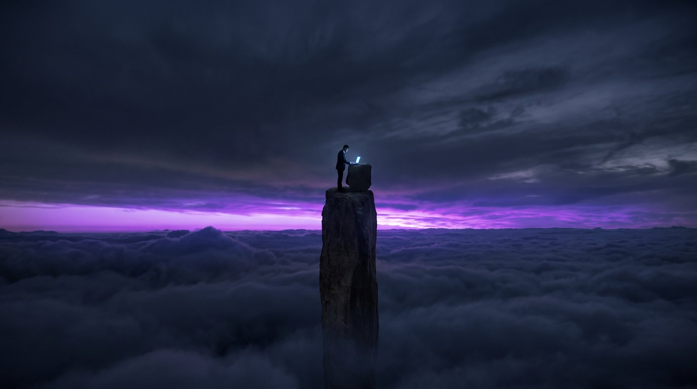
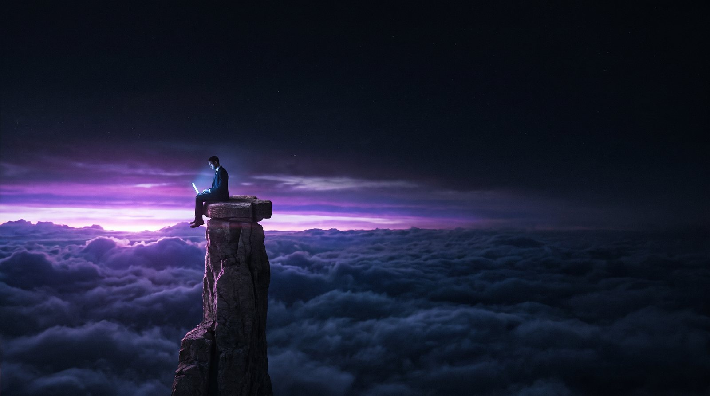
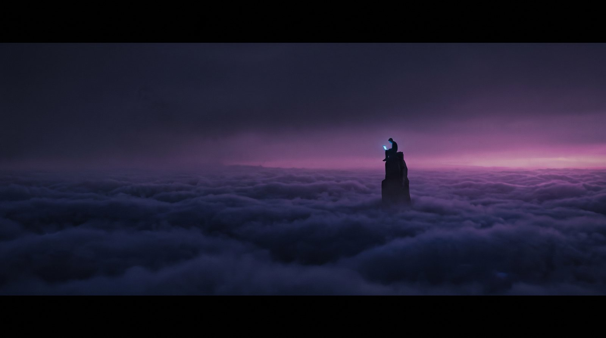

"Need a website?" — cliff hero concepts
Three 480p Kling drafts. The giant text floats over each as a rough stand-in — the final build gets the full layered depth treatment (text between sky and subject, mouse + scroll parallax). Reply with A, B, or C.
Variant A · seated on cliff edge, sunrise right
Need a website?
Wide shot. Owner hunched over the laptop on the cliff edge, head in hand. Thin purple dawn breaking on the right horizon.
Variant B · centered spire, backlit by purple dawn
Need a website?
Owner standing on a rock spire, centered — the strongest layout for the text-behind-subject depth trick. Purple sunrise backlights the whole scene.
Variant C · behind-the-shoulder, biggest sunrise
Need a website?
Closest emotionally — hands in hair, laptop glow on the rock. The purple sunrise is largest and most layered in this one.
The Throw — full narrative take
Full Kling 3.0, 10 seconds: frantic typing, the snap, the laptop hurled off the cliff and swallowed by the clouds. Faster cloud drift throughout.
The Throw · 10s narrative
Need a website?
One-time story, not a loop — proposal: it plays ONCE on page load, then crossfades into the ambient seamless loop. Reply "ship the throw" and I'll wire that intro-then-loop into the preview hero.
Round 2 — distant standing figure (stills)
Three compositions per your notes: farther figure, standing and typing, lone spire mid-clouds. Reply D, E, or F and I'll animate the winner and build it in with the layered text.

Still D · standing & typing, centered needle spire
Need a website?
Standing upright, hands on the keyboard, laptop on a rock ledge. Purple dawn band directly behind. Closest to the brief.

Still E · low angle, monumental spire, starfield
Need a website?
Seated on the summit edge, deepest starry sky, sunrise wrapping the horizon. Most dramatic light on the figure.

Still F · extreme wide, maximum isolation
Need a website?
The spire far away in rolling mist, figure a pinpoint of laptop light. The biggest sense of scale and solitude.
Pick a letter and I'll build it in at 1080p with the full multi-layer depth hero (giant text sandwiched behind the subject, three-rate parallax), plus the sub-lines and CTAs.